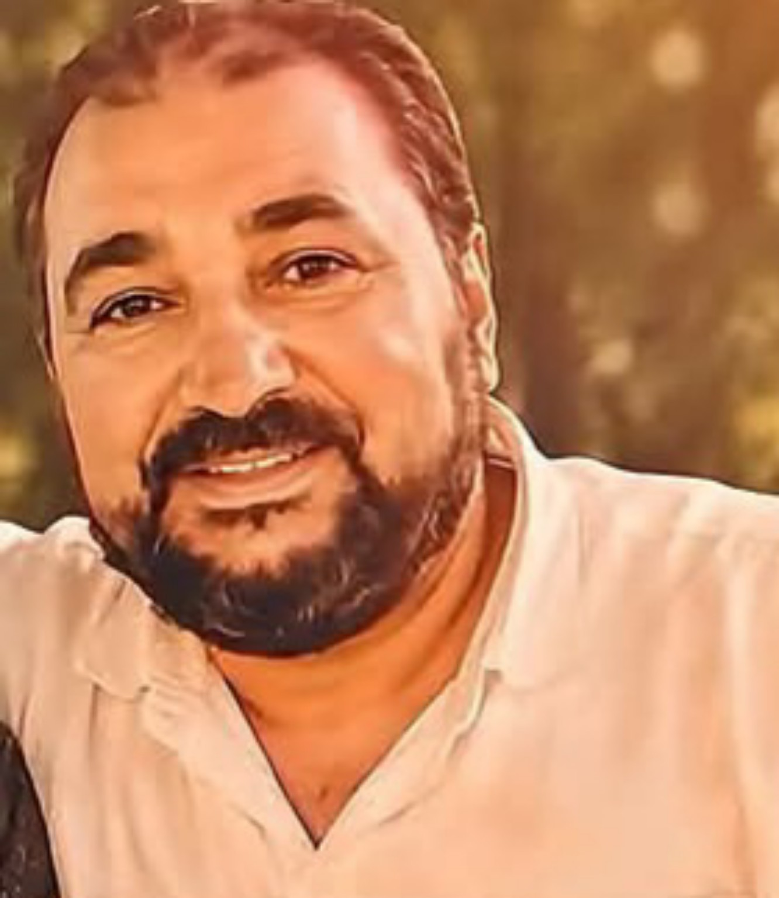

بِسْمِ اللهِ الرَّحْمٰنِ الرَّحِيمِ
رحلت عنا
جسدًا.. وبقيت
في قلوبنا دائمًا
جسدًا.. وبقيت
في قلوبنا دائمًا
الذين إذا أصابتهم مصيبة قالوا إنا لله وإنا إليه راجعون
ذكراك باقية
ودعاؤنا لك
لا ينقطع
ودعاؤنا لك
لا ينقطع

دعوة لإحياء ذكرى وفاة المغفور له
مصطفى رشيد علي
16 / 10 / 2019
ذكرى الوفاة16 أكتوبر 2019
رحم الله فقيدنا الغالي.. وجعل ذكراه دائمًا في قلوبنا
اضغط على أيقونة للتفاعل والمشاركة